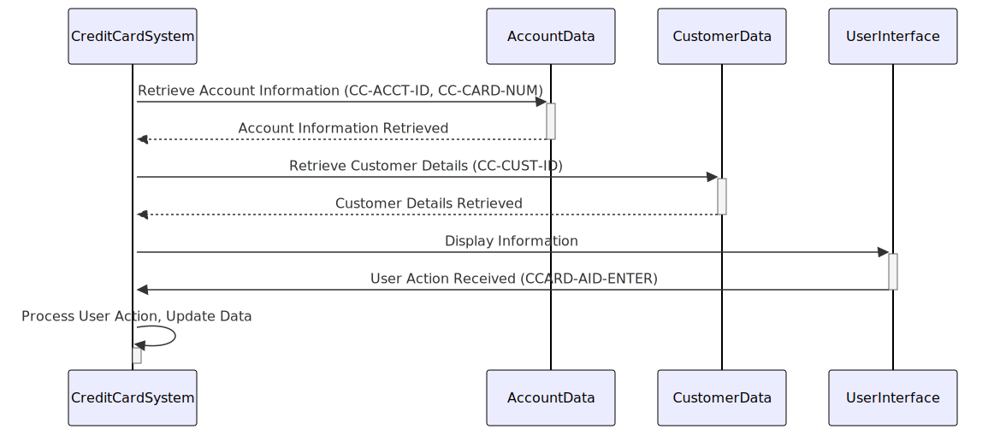

Gerado em: 1º de outubro de 2024
Título do Documento: Sistema de Cartão de Crédito - Estrutura de Dados para Operações de Cartão de Crédito
Descrição Resumida:
Este documento detalha a estrutura de dados utilizada em um sistema de cartão de crédito, com foco em como as informações da conta do cartão de crédito, os detalhes do cliente e as interações do usuário são armazenadas e acessadas. Esta estrutura é definida no copybook CVCRD01Y, que atua como um modelo para organizar essas informações dentro do sistema.
Histórias do Usuário:
Como usuário do Sistema de Cartão de Crédito, preciso de uma maneira padronizada de armazenar e acessar as informações da conta do cartão de crédito, os detalhes do cliente e rastrear as interações do usuário para garantir o processamento eficiente e preciso das operações do cartão de crédito.
Epic Relacionado:
3 - Gestão de Cartão de Crédito
Requisitos Funcionais:
- Identificação da Conta: O sistema deve ser capaz de identificar exclusivamente cada conta de cartão de crédito. Isso é feito usando um identificador exclusivo armazenado no item de dados
CC-ACCT-ID.
- Gerenciamento do Número do Cartão: O sistema deve ser capaz de armazenar e processar números de cartão de crédito. O item de dados
CC-CARD-NUM é usado para essa finalidade e pode ser tratado como dados de texto e numéricos.
- Associação do Cliente: O sistema deve vincular as informações do cartão de crédito a um cliente específico. Isso é obtido armazenando um identificador de cliente exclusivo no item de dados
CC-CUST-ID.
- Interação da Interface do Usuário: O sistema precisa lidar com as interações do usuário, como teclas pressionadas. Itens de dados como
CCARD-AID-ENTER e CCARD-AID-CLEAR provavelmente representam ações como pressionar as teclas “Enter” ou “Clear”.
- Controle de Fluxo do Programa: O sistema deve gerenciar o fluxo de operações, como navegar entre diferentes programas ou telas. Itens de dados como
CCARD-LAST-PROG e CCARD-NEXT-PROG provavelmente armazenam os nomes dos programas envolvidos neste fluxo.
Requisitos Não Funcionais:
- Desempenho: O acesso e a recuperação de dados da estrutura de dados devem ser rápidos e eficientes para evitar impactar o desempenho do sistema.
- Manutenibilidade: A estrutura de dados deve ser bem organizada e documentada para facilitar a manutenção e as atualizações.
- Escalabilidade: O design da estrutura de dados deve permitir a expansão futura e a adição de novos elementos de dados sem exigir alterações significativas no código.
Critérios de Aceitação:
- A estrutura de dados representa com precisão as informações da conta do cartão de crédito, os detalhes do cliente e as interações do usuário, conforme definido nos requisitos.
- O sistema pode armazenar e recuperar dados com sucesso usando esta estrutura.
- A estrutura de dados se integra perfeitamente com outras partes do sistema de cartão de crédito.
Melhorias de Código:
- Validação de Dados: Implemente verificações para garantir a validade dos dados que estão sendo armazenados na estrutura. Por exemplo, os números de cartão de crédito devem ser validados usando um algoritmo de checksum.
- Documentação: Adicione comentários claros para explicar a finalidade de cada item de dados e como ele é usado no sistema.
- Padronização: Se possível, alinhe a estrutura de dados com quaisquer padrões do setor para troca ou armazenamento de dados para melhorar a interoperabilidade com outros sistemas.
Melhorias de Segurança:
- Criptografia de Dados: Criptografe dados confidenciais, como números de cartão de crédito, para protegê-los de acesso não autorizado.
- Controle de Acesso: Implemente mecanismos para restringir o acesso à estrutura de dados e seus elementos com base nas funções e permissões do usuário.
- Registro de Auditoria: Rastreie todos os acessos e modificações na estrutura de dados para fins de auditoria e segurança.
Diagrama Conceitual:

–Made by “Smart Engineering” (by Compass.UOL)–